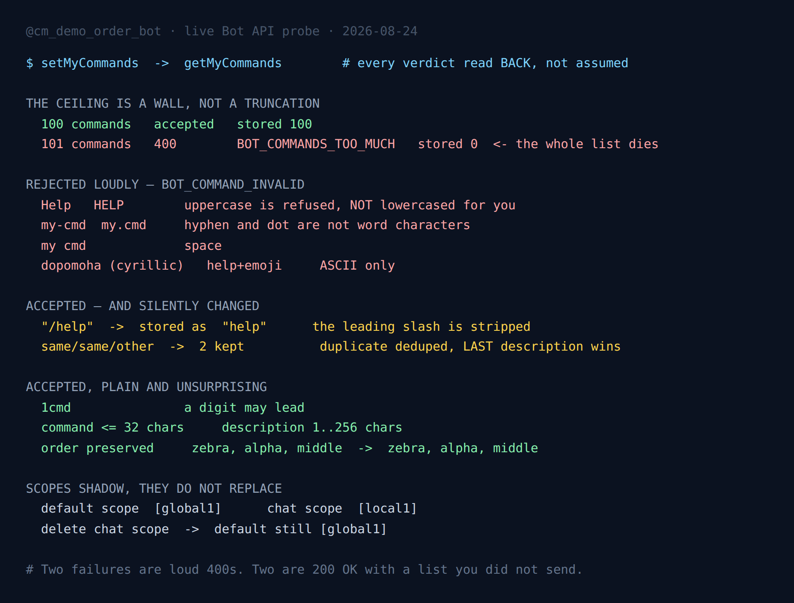

Telegram Bot Commands: 100 Max, Two Silent Rewrites
The command menu is the one part of a Telegram bot that users see before they type anything. It is also configured through an endpoint that answers true and moves on, which means the list you sent and the list your users get are two different objects that you have no particular reason to compare.
So I compared them. Every case below was set with setMyCommands and then read back with getMyCommands before anything was concluded about it, because a boolean return value is not evidence about state.
Four behaviours came out of it. Two are loud, well-documented 400s. Two are 200 OK with a menu you did not send.
- The 100-command ceiling is a wall, not a truncation. 101 commands are rejected outright and your old menu survives untouched.
- The charset is enforced, not normalised.
Helpis refused. It is not lowercased for you. - A leading slash is silently stripped.
/helpgoes in,helpcomes out. - Duplicate names are silently deduplicated, and the last description wins.

The setup
One throwaway demo bot with nothing in production behind it, and a probe that is standard library only. Each phase sets a list, reads it back, records the pair, and clears the list before the next phase so that no phase inherits the previous one's state.
That last detail matters more than it sounds. The command list is bot-wide persistent server state, not a per-request parameter. A phase that forgets to clean up does not fail — it silently contaminates the phase after it, and you get a result that is real but is about the wrong input.
The ceiling is 100, and it refuses rather than truncates
The setMyCommands documentation states at most 100 commands, and that is exactly right. What it does not say is what happens on 101, and there are two plausible answers with very different consequences.
| Commands sent | Response | Commands stored |
|---|---|---|
| 1 | 200 OK | 1 |
| 50 | 200 OK | 50 |
| 100 | 200 OK | 100 |
| 101 | 400 BOT_COMMANDS_TOO_MUCH | 0 — nothing changed |
| 150 | 400 BOT_COMMANDS_TOO_MUCH | 0 — nothing changed |
It refuses. The whole list is rejected as a unit, and the bot keeps whatever menu it already had.
This is worth dwelling on because it is the opposite of how the neighbouring endpoint behaves. An inline keyboard past its limit is truncated in silence — 4000 buttons in a row return 200 OK with 12 stored. Same API, same kind of oversized array, and the failure modes are mirror images: the keyboard gives you a success and less data than you sent, the command list gives you an error and no change at all.
Refusing is by far the friendlier of the two, but it has a failure mode of its own, and it is a deployment-shaped one. A bot that generates its command list dynamically — one entry per configured workflow, per tenant, per feature flag — crosses 100 on a Tuesday, gets a 400 during startup, logs it at whatever level your framework picked, and carries on serving a menu that is now several releases stale. Nothing is broken. The menu is simply frozen at the last list small enough to fit, and every user sees a version of the bot that no longer exists.
The charset is enforced, not cleaned up
The documented rule is lowercase English letters, digits and underscores, 1 to 32 characters. Every part of that is true and enforced, and the important word is enforced.
| Command sent | Result |
|---|---|
help, top10, my_cmd | accepted, stored verbatim |
1cmd | accepted — a digit may lead |
Help, HELP | 400 BOT_COMMAND_INVALID |
my-cmd, my.cmd, my cmd | 400 BOT_COMMAND_INVALID |
| Cyrillic, emoji | 400 BOT_COMMAND_INVALID |
"" | 400 command must be non-empty |
| 33 characters | 400 command length must not exceed 32 |
Uppercase is the one that catches people, because Telegram itself is case-insensitive when a user types a command — sending /HELP in a chat reaches a bot that registered help. It is easy to generalise from that to "the API will lowercase my list for me". It will not. It rejects the entire call, which means one capital letter in one generated entry takes down the whole menu update, not just its own row.
If your command names come from anything user-editable or config-editable — a tenant name, a workflow slug, a YAML file someone hand-writes — normalise before you send: lowercase it, replace anything outside [a-z0-9_], truncate to 32, and drop entries that end up empty. The API's answer to a bad name is to discard the good ones next to it.
Non-English commands are simply not possible. The description field takes any Unicode you like, so a Ukrainian or Arabic bot can have a fully localised menu of descriptions hanging off ASCII command names, and that is the only shape available.
Telegram in Production
The measured limits, the failure modes and the boilerplate that survives them: escaping, rate limits, update queues and webhook handling, in one pack.
Get the pack — $19Two rewrites that happen on the way in
Everything above announces itself. These two do not.
The leading slash is stripped
Send {"command": "/help"} and the call succeeds. Read it back and the stored command is help. The slash is a display convention, not part of the name, and the API quietly normalises it away.
On its own this is harmless — arguably it is the API being helpful. It stops being harmless the moment you write the obvious reconciliation check:
sent = [{"command": "/help", "description": "Show help"}]
bot.set_my_commands(sent)
live = bot.get_my_commands()
assert [c.command for c in live] == [c["command"] for c in sent] # failsThe assertion fails on a bot that is configured perfectly correctly. Which way you resolve that matters: strip the slash in your own comparison, rather than "fixing" it by sending the slash-prefixed form everywhere, because the difference is only ever cosmetic and the check is the thing you actually want to keep.
Duplicate names are deduplicated, last one wins
This is the one I would not have gone looking for. Send three commands where two share a name:
[{"command": "same", "description": "first"},
{"command": "same", "description": "second"},
{"command": "other", "description": "third"}]The response is 200 OK. The stored list has two entries: same with the description second, and other. The first occurrence is gone, and nothing in the response mentions that the list shrank.
Duplicates are not something anyone writes deliberately, which is exactly why this bites — they arrive from merging. A base command set plus a per-tenant set, a default menu extended by a plugin, a list assembled by concatenating two config files. The merge produces a collision, the collision resolves to whichever entry was appended last, and the menu ends up describing a command differently from what the code that registered it first believed.
Order is otherwise preserved exactly. Sending zebra, alpha, middle stores zebra, alpha, middle — no alphabetical sort, so the sequence in the menu is the sequence in your array and it is yours to control.
The description field
Less exciting, and it behaves exactly as advertised: 1 to 256 characters, both boundaries hard.
| Description length | Result |
|---|---|
| 0 | 400 command description must be non-empty |
| 1 | accepted |
| 256 | accepted |
| 257 | 400 command description length must not exceed 256 |
An empty description is a 400 rather than a shrug, which is the right choice and worth knowing if you build descriptions from a translation catalogue: a missing key that resolves to "" takes down the entire setMyCommands call, not just its own entry. In practice 256 is far more room than the menu can display comfortably; the useful limit is closer to whatever fits on a phone.
Scopes shadow, they do not replace
Command scopes let you show different menus to different chats, and the mechanism is layered rather than destructive.
| Action | Default scope | Chat scope |
|---|---|---|
set default [global1] | [global1] | — |
then set chat scope [local1] | [global1] | [local1] |
| then delete chat scope | [global1] | [] |
Writing a chat-scoped list leaves the default completely intact, and deleting the chat scope leaves the default intact too — that chat simply falls back to it at display time. So the scoped list is an override, and removing an override is safe.
One consequence to keep in mind when debugging: getMyCommands with no scope argument returns the default scope, not "the commands this user sees". If a tester reports the wrong menu, querying the bare endpoint will happily show you a correct-looking list while the chat-scoped override that is actually being displayed sits somewhere you did not ask about. Pass the same scope you are debugging.
For teardown, deleteMyCommands and setMyCommands with an empty array are equivalent — both leave getMyCommands returning []. Use whichever reads better; there is no hidden difference between them.
What to do with this
- Normalise command names before sending. Lowercase, strip to
[a-z0-9_], cut to 32 characters, drop empties. One bad name rejects the whole list, so this is cheap insurance on any dynamically built menu. - Deduplicate your list yourself, and decide which one wins. The API's answer is "the last one", chosen for you and applied without comment. If you merge command sets from more than one source, collapse collisions where you can still see them.
- Treat a failed
setMyCommandsas a real error at startup. The call failing does not degrade the bot in any visible way — it just freezes the menu. That makes it precisely the kind of failure that gets logged atwarningand lives for months. - Read the list back once in your test suite. Compare with the slash stripped, and assert on the length too. Both silent rewrites on this page show up instantly in a round-trip and never show up in a return value.
That last habit is the one that keeps paying out across this whole API. Most libraries — python-telegram-bot among them — return the API's boolean straight through, so True is the most any wrapper can honestly give you. It means the request was accepted. Whether the menu now matches the array you built is a separate question, and there is exactly one way to answer it.
FAQ
How many commands can a Telegram bot have?
One hundred. 101 returns BOT_COMMANDS_TOO_MUCH and the whole list is rejected, so the previous menu stays live. There is no truncation to 100 — it is all or nothing.
Why does setMyCommands return BOT_COMMAND_INVALID?
A command name contains something outside lowercase ASCII letters, digits and underscores. Uppercase is the usual culprit and is refused rather than lowercased; hyphens, dots, spaces, Cyrillic and emoji fail the same way. A digit may lead, so 1cmd is fine.
Should I include the slash in setMyCommands?
You can — /help is accepted and stored as help. The slash is stripped silently, so any code comparing sent against stored needs to strip it too or it will report a mismatch on a correctly configured bot.
What happens if two commands share a name?
The call succeeds and the list is deduplicated without warning. The description from the last occurrence survives. Watch for this when merging command sets from multiple sources.
How long can a command and its description be?
Command 1–32 characters, description 1–256. All four boundaries return a clear 400 when crossed, and empty values for either field are refused.
Does a chat-scoped command list delete the global one?
No. Scopes shadow rather than replace: the default scope keeps its own list, and deleting a chat scope leaves the default untouched so that chat falls back to it.
Can Telegram bot commands be non-English?
The names cannot — they are ASCII only. Descriptions accept any Unicode, so a localised menu means English command names with translated descriptions.
Is deleteMyCommands different from sending an empty array?
No. Both leave getMyCommands returning an empty list, for the same scope.
More measurements from the same bot: the inline keyboard caps that truncate instead of erroring — the mirror image of this endpoint — plus which MarkdownV2 characters break a message and which delete it and which errors arrive before Telegram checks your chat exists.
← Back to Blog